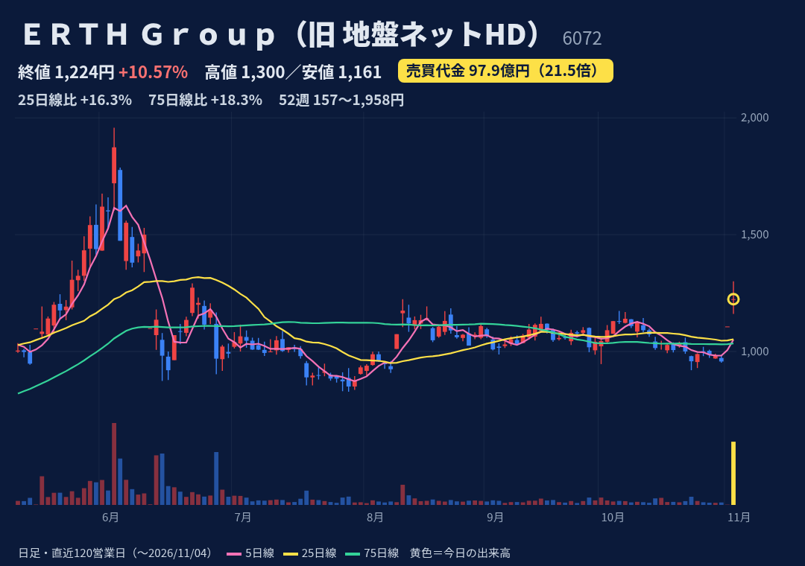
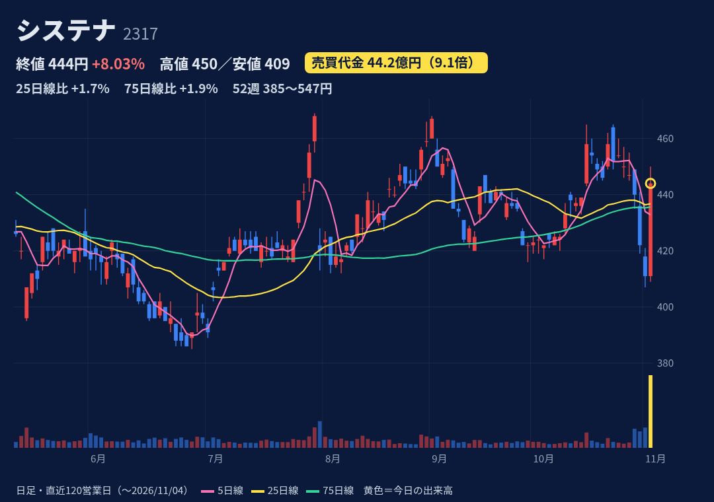
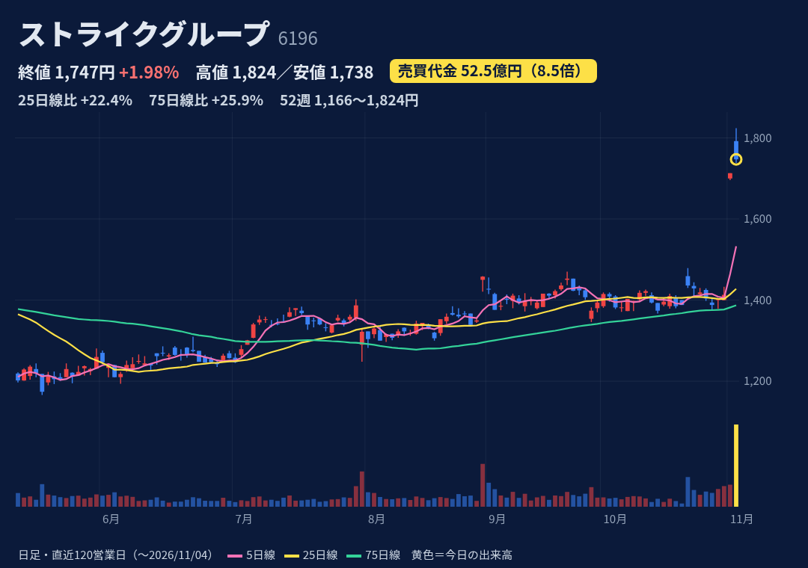
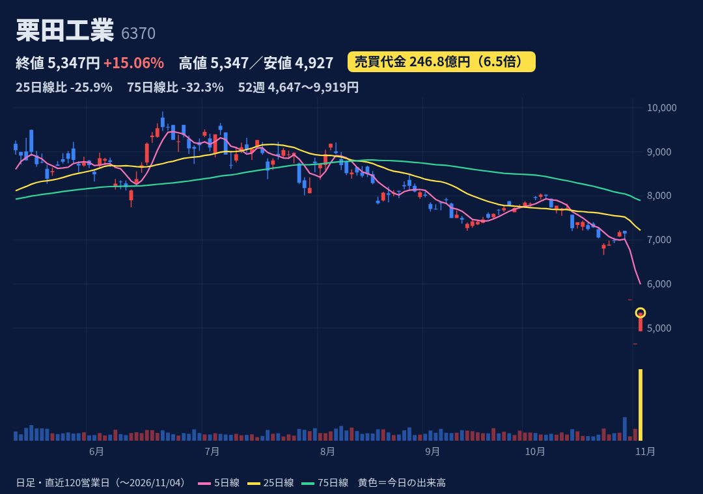
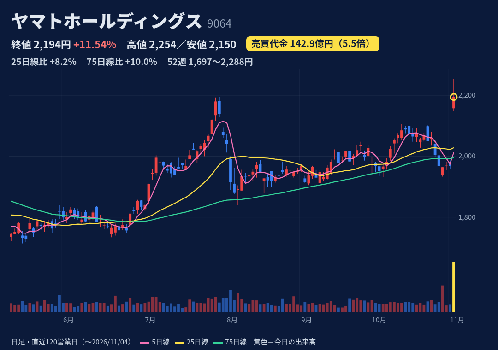
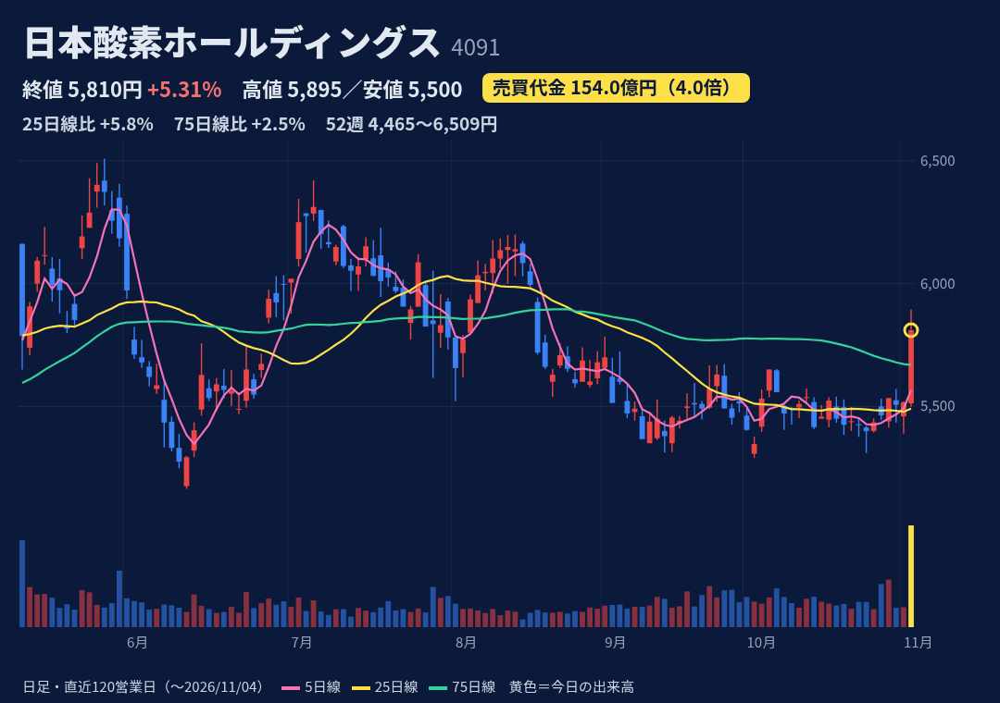

地盤解析・品質証明の請負（工事は持たない）。10/30に「バリュー投資事業」への参入を発表。10/1に地盤ネットHDから社名変更。
10/30 16:30開示：井村俊哉氏らのKaihouと投資顧問契約→バリュー投資事業を開始。第三者割当の新株予約権（TIP）＋全株主への無償割当で最大約207.5億円を調達。11/2ストップ高、今日も続伸。
前期売上31.9億(+70%)。今期予想 売上36億・営業▲1.25億の赤字（5/14）。上期決算は11/12発表予定（説明会も開催）。
窓を空けて始値1221→高値1300→終値1224（上ヒゲ76円）。52週高値1958(6/3)・安値157(25/11/7)。25日線+16%・75日線+18%。急増日のあと5日で−10〜−28%の例が多い
10/30時点 買残529.8万株・売残76.7万株・倍率6.91倍（買残は発行済の約23%）。JPXの日々公表銘柄（2/18指定）。増担保規制はなし。
大幅な希薄化：TIP予約権550万株(23.8%)＋無償割当 約2242万個(1株580円)。本業は赤字予想、投資事業は運用実績なし。PBR19.7倍。急騰→急落の前例多数。

ソフト開発支援（車載・自動運転、モバイル向け）とITソリューション事業。
今日12:30頃に開示：自社株買い 上限2380万株（6.65%）・100億円（11/5〜27/11/4、市場買付）と、自己株4260万株（10.00%）を11/12に消却。前場は横ばい→後場に上昇。
上期（10/29）売上489億(+4.1%)・営業75.6億(−0.5%)・経常+1.7%。7-9月期の営業は−8.7%。通期予想の営業159.6億(+3.9%)は据え置き、進捗47%。
始値411（横ばい）→高値450→終値444（上ヒゲ6円）。52週高値547(25/12/12)・安値385(6/26)、レンジの下から36%の位置。25日・75日線（約436円）をわずかに上回る
10/30時点 買残66.7万株・売残22.5万株・倍率2.97倍。日々公表・増担保規制はなし（JPX）。
本業は横ばい（上期営業微減）。過去1年で売買代金が急増した7回のうち、上昇日のあと5日で−10%前後になった例が複数ある。

公認会計士・税理士が中心のM&A仲介。ネットを使ったマッチングに強み。
10/30 15:30に本決算：前期経常104億(+64%)、今期114億(+10%)で2期連続の最高益予想、年80円に15円増配、自社株買い 上限300万株(5.2%)・40億円。11/2ストップ高→今日続伸。
26/9期 売上270.8億(+33%)・営業104億(+64%)、7-9月期の経常は2.4倍。27/9期予想 売上300.5億(+11%)・営業114.5億(+10%)。次回決算日は未確認。
窓を空けて始値1792→高値1824（年初来高値）→終値1747の陰線（上ヒゲ32円）。52週安値1166(5/18)。25日線+22%・75日線+26%と上に大きく離れている
10/30時点（急騰前）買残117.1万株・売残5.0万株・倍率23.56倍と買いに偏る。日々公表・増担保規制はなし（JPX）。
25日線から+22%離れて過熱気味。信用倍率23倍台で、利益確定の売りが出やすい。7-9月期の利益率47.6%は高く、反動が出る可能性。

水処理の最大手。超純水の供給事業と水処理薬品に強み。
新しい好材料は確認できず。10/29に米国案件の損失（通期で236億円の減益影響）で下方修正→10/30・11/2と2日連続ストップ安。今日は急落の反動でストップ高（株探・みんかぶ）。
10/29修正：通期 営業435億（旧655億、前期比−25%）・最終287億（旧507億）、売上は4550億へ上方修正。配当134円は維持。上期決算は11/5発表予定。
始値4927→高値=終値5347でストップ高引け（上ヒゲなし）。2日で7147→4647（−35%）からの反発。52週高値9919(6/19)から−46%。25日線−26%・75日線−32%と下に大きく離れる
10/30時点 買残17.4万株・売残12.9万株（前週4.5千株から急増）・倍率1.35倍。日々公表・増担保規制はなし（JPX）。
米国の電子産業向け案件で追加費用。別の案件でも同様のリスクが意識される（フィスコ）。同業のオルガノは今日−3.8%で業界全体の買いではない。

宅配便の最大手。集配網で生産性改革を進めている。
米ファラロンが11/2付の大量保有報告書で5.02%保有と判明（報告義務発生10/28）。長尾裕会長の解職・取締役退任を提案。朝から急伸。決算は大引け後15:30で、今日の上昇とは別。
11/4 15:30の上期：営業収益9068億(0.0%)・営業▲17.5億（前年▲37.8億）・最終▲105.6億（赤字拡大）。通期は売上を1兆8950億へ230億下方修正、営業420億は据え置き。
窓を空けて始値2157.5→高値2254（午前）→終値2194.5（上ヒゲ59.5円）。52週高値2288(25/11/25)まで−4%。25日線+8%・75日線+10%。PTSは2211円
10/30時点 買残15.2万株・売残7.4万株・倍率2.06倍。日々公表・増担保規制はなし（JPX）。
アクティビストへの期待で動いており、思惑が外れると下がりやすい。上期は最終赤字が拡大し、PER43倍。高値から押し戻されて引けた。

三菱ケミカルG傘下で産業ガス国内首位。電子材料向けガスで世界3強。サーモスも持つ。
15:00に上期決算（場中）：最終795億(+38.6%)、通期計画に対する進捗60.8%。ただし決算前の朝から上昇しており（14:55時点で約+6%）、決算前に上がった理由は確認できず。
上期 売上収益7371億(+13.3%)・営業1193億(+26.6%)・最終795.9億(+38.6%)。通期予想（売上1.38兆・営業2150億・最終1310億）は据え置き。株探の試算で下期の最終は−22.7%。
始値5512→高値5895→終値5810（上ヒゲ85円）。15:00の決算直後に一時5717円へ下げてから戻した。52週高値6509(5/27)・安値4465(1/29)。25日線+6%・75日線+2.5%
10/30時点 買残15.4万株・売残3.5万株・倍率4.45倍。日々公表・増担保規制はなし（JPX）。
通期予想を据え置いたため、下期は減益の計算になる。同業のエア・ウォーターは今日−1.2%で、業種全体の買いではない。PTSは5859.9円。
株価・出来高・信用残：取引所データ。材料：各社開示・各社報道。